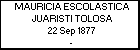
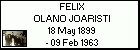
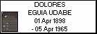

f a m i l y
Children with:
GUILLERMO ANTÓN ALCORTA
Siblings:
JESUS OLANO EGUIA
KEPA OLANO EGUIA
LUIS MARI OLANO EGUIA
RUFINO OLANO EGUIA
MªCONCHI OLANO EGUIA
Mª CARMEN OLANO EGUIA
Children:
LUIS GUILLERMO ANTÓN OLANO
RAQUEL ANTÓN OLANO
ARANCHA ANTÓN OLANO
JAVIER ANTÓN OLANO
AMAYA ANTÓN OLANO
YON IÑAKI (JUAN IGNACIO) ANTÓN OLANO
ARANZAZU OLANO EGUIA
Born: 27 Aug 1927, ETXE-ALAI IRURA GIPUZKOA
Married 19 Jul 1950, SAN MIGUEL ARCANGEL IRURA (GIPUZKOA), to
GUILLERMO ANTÓN ALCORTA
Died: 26 Feb 2025, Burgos
Reference: CERTIFICADO BAUTISMO SAN MIGUEL ARCANGEL (IRURA)
PADRINOS SERGIO OLANO Y MARGARITA OLANO
Generated by
GreatFamily 2.2 update 2